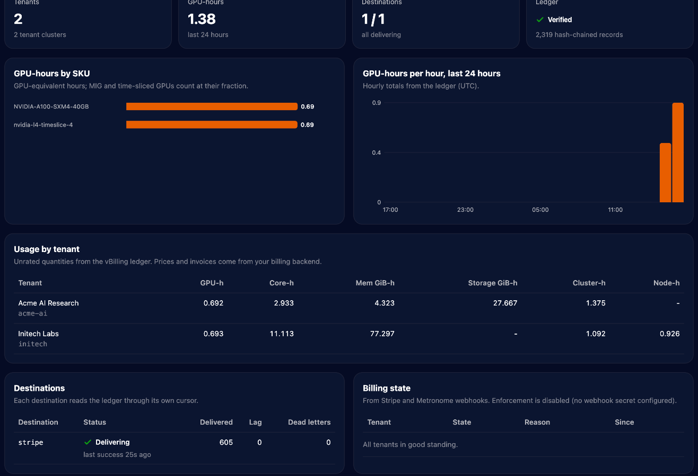

Example: GKE with shared and private GPU nodes
Both vCluster tenancy models on GPUs, metered by vBilling and invoiced by Stripe test mode, from an empty Google Cloud project. The manifests, values files and commands are the ones from a recorded run, with every key, token and account ID left out.
What you build
- GKE as the control plane cluster, with a spot L4 node pool time-shared four ways.
shared-l4, a tenant cluster on shared nodes: its pods run on the L4 and are billed per pod, a quarter GPU each.private-a100, a tenant cluster with private nodes: an A100 VM joins it directly and is billed whole, read through the tenant cluster's own API with a read-only kubeconfig.- Prometheus reading DCGM: GKE's exporter on shared nodes, and a Prometheus agent that remote-writes from the private node.
- vBilling sending usage to Stripe: customers, one meter per metric and SKU, subscriptions, invoices.
| File (examples/gke-gpu) | What it is |
|---|---|
01-prometheus.yaml | Central Prometheus: scrapes GKE's DCGM exporter, accepts remote writes |
02-tenant-shared.yaml | vcluster.yaml for the shared-nodes tenant cluster |
03-tenant-private.yaml | vcluster.yaml with Private Nodes and the read-only vbilling-kubeconfig export |
04-node-startup.sh | VM startup script that joins the GPU machine as a private node |
05-gpu-operator-values.yaml | NVIDIA GPU Operator inside the private tenant cluster |
06-prometheus-agent.yaml | Prometheus agent in the private tenant cluster, remote-writing DCGM |
07-vbilling-values.yaml | vBilling Helm values: Stripe, DCGM queries, a PromQL billable metric |
workloads/ | Sample GPU workloads for each tenant cluster |
Prerequisites
gcloudwith a project selected,kubectl,helm, and thevclusterCLI (0.36 or later).- vCluster Platform for the Private Nodes license. The CLI must be logged in with a key that can register tenant clusters (a scoped key fails with
denied by loft access key scope). vCluster 0.36.2 and later need Platform 4.11.3 or later. - A Stripe test-mode secret key saved in a local file, for example
~/.stripe-test-key. - GPU quota in the zone for one L4 and one A100 (spot capacity is enough).
export ZONE=us-central1-a CLUSTER=vbilling-demo
git clone https://github.com/vClusterLabs-Experiments/vbilling && cd vbilling/examples/gke-gpu1. Control plane cluster
gcloud container clusters create $CLUSTER --zone $ZONE --release-channel regular \
--machine-type e2-standard-4 --num-nodes 2
gcloud container node-pools create l4-spot --cluster $CLUSTER --zone $ZONE \
--machine-type g2-standard-8 --spot --num-nodes 1 \
--accelerator type=nvidia-l4,count=1,gpu-driver-version=default,gpu-sharing-strategy=time-sharing,max-shared-clients-per-gpu=4 \
--node-labels vbilling.vcluster.com/capacity-type=spot
gcloud container clusters get-credentials $CLUSTER --zone $ZONE2. Prometheus
One Prometheus for the control plane cluster. GKE (1.32 and later) runs a managed DCGM exporter on GPU nodes; scraped with the exporter's own target labels, the workload's namespace arrives as exported_namespace, which vBilling's default queries match. An internal load balancer accepts remote writes from private nodes.
kubectl apply -f 01-prometheus.yaml
INGEST_IP=$(kubectl -n monitoring get svc prometheus-ingest -o jsonpath='{.status.loadBalancer.ingress[0].ip}')3. Tenant clusters
vcluster platform login https://<your-platform-host> # browser login, no key on the command line
vcluster create shared-l4 -n shared-l4 -f 02-tenant-shared.yaml --connect=false
vcluster create private-a100 -n private-a100 -f 03-tenant-private.yaml --connect=falseWhen the CLI is logged in, vcluster create registers each tenant cluster with the Platform, which is what licenses Private Nodes. A tenant cluster created before logging in is registered with vcluster platform add vcluster private-a100 -n private-a100 --project default. The private tenant cluster's exportKubeConfig.additionalSecrets writes the read-only Secret vbilling-kubeconfig that vBilling reads (see Private Nodes).
Tell vBilling who the tenants are (the emails use the reserved .example domain):
kubectl annotate ns shared-l4 vbilling.vcluster.com/tenant=acme-ai "vbilling.vcluster.com/display-name=Acme AI" \
vbilling.vcluster.com/email=billing@acme-ai.example vbilling.vcluster.com/plan=gpu-cloud
kubectl annotate ns private-a100 vbilling.vcluster.com/tenant=initech "vbilling.vcluster.com/display-name=Initech" \
vbilling.vcluster.com/email=billing@initech.example vbilling.vcluster.com/plan=gpu-cloud4. A private GPU node
Create a join token, put the join command it prints into the startup script, and boot the machine. The VM must reach the tenant cluster's internal load balancer, so keep it in the same VPC and region.
vcluster connect private-a100 -n private-a100 -- vcluster token create --expires 2h | grep node/join > join.txt
awk -v cmd="$(cat join.txt)" '$0 == "JOIN_COMMAND" { print cmd; next } { print }' 04-node-startup.sh > startup.sh
gcloud compute instances create gpu-node-1 --zone $ZONE --machine-type a2-highgpu-1g \
--provisioning-model SPOT --instance-termination-action STOP --maintenance-policy TERMINATE \
--image-family ubuntu-2204-lts --image-project ubuntu-os-cloud --boot-disk-size 150GB \
--no-service-account --no-scopes --metadata-from-file startup-script=startup.shOnce gpu-node-1 is Ready in the tenant cluster, remove the token from the instance and from disk, and label the node so it gets an SKU:
gcloud compute instances remove-metadata gpu-node-1 --zone $ZONE --keys startup-script
rm join.txt startup.sh
vcluster connect private-a100 -n private-a100 -- kubectl label node gpu-node-1 \
node.kubernetes.io/instance-type=a2-highgpu-1g vbilling.vcluster.com/capacity-type=spot5. GPU Operator and DCGM in the private tenant cluster
helm repo add nvidia https://helm.ngc.nvidia.com/nvidia && helm repo update
vcluster connect private-a100 -n private-a100 -- \
helm install gpu-operator nvidia/gpu-operator -n gpu-operator --create-namespace -f 05-gpu-operator-values.yaml
sed "s/PROMETHEUS_INGEST_IP/$INGEST_IP/" 06-prometheus-agent.yaml > agent.yaml
vcluster connect private-a100 -n private-a100 -- kubectl apply -f agent.yamlThe driver container compiles for the node's kernel, about five minutes. The agent adds the external label vcluster=private-a100 to every series it sends, which is what 07-vbilling-values.yaml selects with {{vcluster}}.
nvidia.com/mig.config=all-1g.5gb to split the A100 into seven slices. The GPU cannot be reset from inside a Compute Engine VM, so the MIG manager reports failed until the VM is rebooted (gcloud compute instances reset). A stop and start can move the VM to a GPU without MIG mode. Under MIG, vBilling still bills one whole A100, and DCGM utilization comes from each instance's engine activity.6. vBilling
kubectl create namespace vbilling
kubectl -n vbilling create secret generic vbilling-stripe --from-file=api-key=$HOME/.stripe-test-key
helm install vbilling ../../deploy/helm/vbilling -n vbilling -f 07-vbilling-values.yaml
vcluster connect shared-l4 -n shared-l4 -- kubectl apply -f workloads/shared-inference.yaml
vcluster connect private-a100 -n private-a100 -- kubectl apply -f workloads/private-training.yamlvBilling creates the Stripe customers and meters on the first windows. Give the meters prices tagged with the plan, then restart vBilling so it subscribes the tenants:
export STRIPE_API_KEY="$(cat ~/.stripe-test-key)"
curl -s https://api.stripe.com/v1/billing/meters -u "$STRIPE_API_KEY:" | grep -E '"(id|event_name)"'
curl -s https://api.stripe.com/v1/prices -u "$STRIPE_API_KEY:" \
-d currency=usd -d unit_amount_decimal=220 \
-d "recurring[interval]=month" -d "recurring[usage_type]=metered" -d "recurring[meter]=<meter id>" \
-d "product_data[name]=A100 40GB GPU-hour" -d "metadata[vbilling_plan]=gpu-cloud"
kubectl -n vbilling rollout restart statefulset/vbilling7. Check it
kubectl -n vbilling port-forward svc/vbilling 8080:8080 &
# dashboard: http://localhost:8080/
curl -s "localhost:8080/api/v1/events?from=$(date -u +%Y-%m-%dT%H:00:00Z)" | head
curl -s "localhost:8080/api/v1/reconcile?from=<start>&to=<end>" # ledger vs Stripe, per tenant and metricOne 30 second window:
| Tenant | Metric | Quantity | Why |
|---|---|---|---|
| acme-ai | vcluster_gpu_hours (sku nvidia-l4-timeslice-4) | 0.004166667 | 2 pods × ¼ GPU × 30 s |
| initech | vcluster_gpu_hours (sku NVIDIA-A100-SXM4-40GB) | 0.008333333 | The whole A100, also under MIG |
| initech | vcluster_private_node_hours (sku a2-highgpu-1g) | 0.008333333 | The node, billed whole |
| initech | vcluster_cpu_core_hours | 0.1 | All 12 cores |
| initech | gpu_energy_kwh | ≈ 0.0015 | ≈ 177 W for 30 s, from DCGM |

If the spot A100 is reclaimed, the window in which the node becomes unreachable bills only the seconds before it, and the rest becomes vcluster_gpu_downtime_hours until the node and its GPUs are back.
Clean up
gcloud compute instances delete gpu-node-1 --zone $ZONE --quiet
vcluster delete shared-l4 -n shared-l4 --delete-namespace
vcluster delete private-a100 -n private-a100 --delete-namespace
kubectl delete namespace monitoring vbilling # removes the load balancers and volumes GKE created
gcloud container clusters delete $CLUSTER --zone $ZONE --quiet